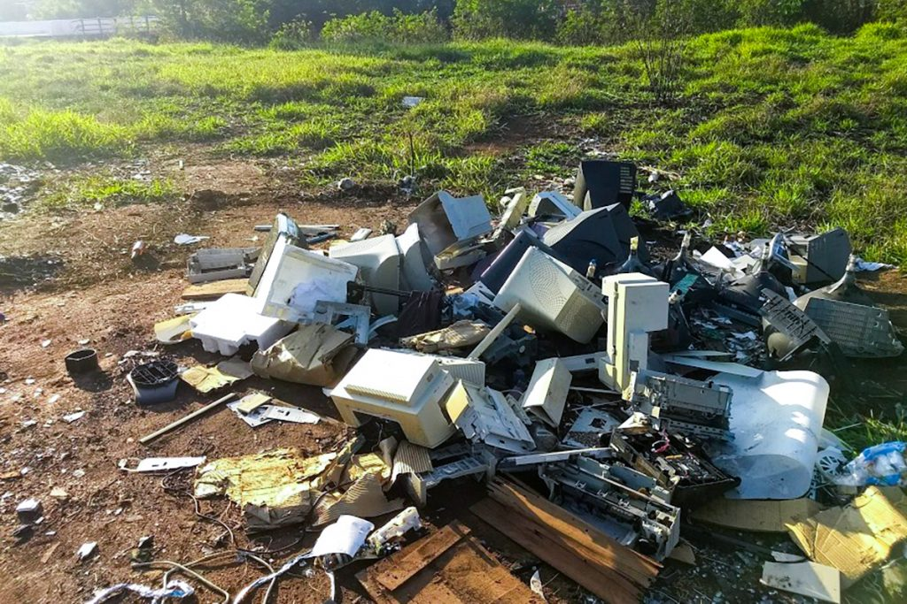
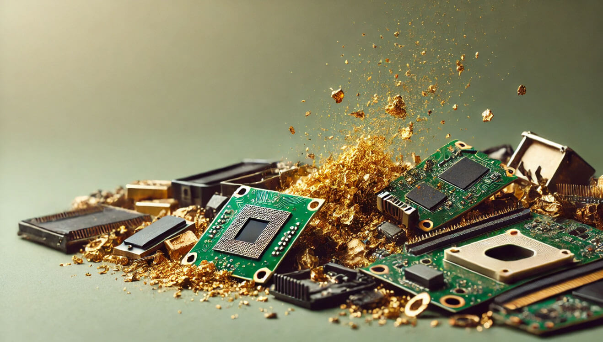
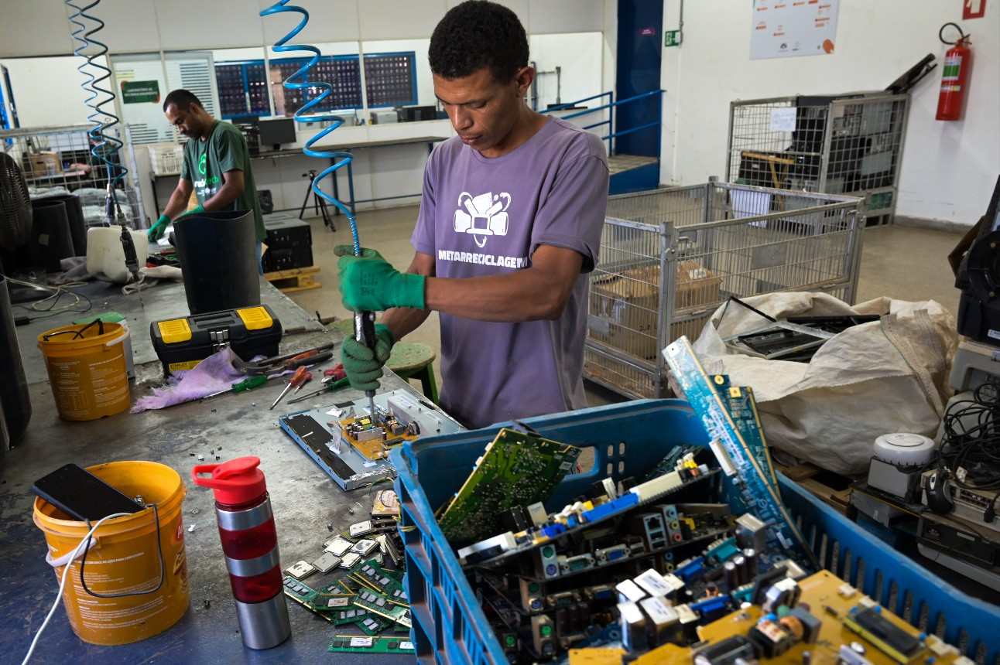

A Tabela Periódica de Riscos

Encontre o Ponto de Coleta Mais Próximo
A ABREE (Associação Brasileira de Reciclagem de Eletroeletrônicos) mantém milhares de pontos de recebimento em todo o Brasil. Encontre o mais perto de você no site oficial.
Buscar no Site da ABREEO Valor Escondido no Lixo

O Que é Lixo Eletrônico?
Legislação Brasileira: Responsabilidade Compartilhada
Guia Prático do Descarte Consciente

Pontos de Coleta no ABC Paulista
Santo André
- Estações de Coleta da SEMASA: Diversos locais na cidade. Verifique os endereços no site oficial.
- Parque Central: Ponto de entrega voluntária de pequenos eletrônicos.
São Bernardo do Campo
- Ecopontos Municipais: Recebem diversos tipos de recicláveis, incluindo eletrônicos.
- Programa Bota-Fora: Coleta agendada de itens volumosos, como eletrodomésticos.
São Caetano do Sul
- SAESA - Atende Fácil: Oferece pontos de entrega e agendamento para coleta.
- ParkShoppingSãoCaetano: Mantém um coletor permanente para lixo eletrônico.
Mapa de Pontos de Coleta no Estado de São Paulo
Explore o mapa para encontrar ecopontos e locais de descarte em diversas cidades do estado. Você pode navegar, dar zoom e clicar nos locais para mais detalhes.